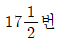
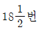
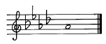
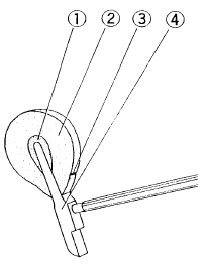

피아노조율산업기사 (2003-05-25 기출문제)
1과목: 임의 구분
1. 피아노 역사에 대한 설명 중 그 연대가 가장 빠른 것은?
- 타현거리를 좁히는 소프트 페달 출현
- 독일의 슈타인이 에스케이프먼트 액션 발명
- 파리에서 최초로 에라르가 피아노 제작
- 에라르 아그라프 발명
(정답률: 알수없음)

2. 현의 굵기가 1.0mm일 때 현 번호는?
- 17번

- 18번

(정답률: 알수없음)
3. 현의 번호 중 13번부터 19번까지에 있어서 1/2번마다 굵기의 차이는?
- 0.⑤0 mm
- 0.035 mm
- 0.100 mm
- 0.025 mm
(정답률: 알수없음)
4. 힛치핀과 장브리지 사이에 보조 브리지를 넣어서 배음의 울림을 얻게하는 장치는?
- 링브리지
- 커트브리지
- 서스펜딩브리지
- 아리콧트브리지
(정답률: 알수없음)
5. 향봉에 관한 설명 중 틀린 것은?
- 향판의 크라운을 보강 한다.
- 향판의 음향 전달에도 도움을 준다.
- 향봉의 재질은 나도박, 단풍나무가 가장 좋다.
- 향봉의 두께는 22-25mm정도가 좋다.
(정답률: 알수없음)
6. 현의 진동을 향판에 전해주는 교량역할을 하는 것은?
- 힛치핀
- 브리지
- 핀블럭
- 베어링
(정답률: 알수없음)
7. 핀판에 대한 설명 중 틀린 것은?
- 경질의 목재(고로쇠, 나도박)로 몇장 또는 여러장의 단판을 종횡으로 접착하여 제작한다.
- 튜닝핀을 정확 견고하게 유지하여야 한다.
- 현의 장력에 견딜 수 있어야 한다.
- 핀이 너무 헐거워지지 않아야 하므로 핀보다 1∼2mm정도 굵은 드릴로 뚫어야 한다.
(정답률: 알수없음)
8. 댐퍼 가이드 레일(Damper Guide Rail)이란?
- 댐퍼를 일제히 올려주는 긴 나무
- 댐퍼의 상승을 억제하는 쿳숀이 달린 긴 나무
- 댐퍼 가이드홀이 뚫려 있는 긴 나무
- 댐퍼 레버의 상승을 억제하는 긴 나무
(정답률: 알수없음)
9. 건반 1옥타브의 폭은?
- 122.2mm정도
- 160.5mm정도
- 164.5mm정도
- 125.7mm정도
(정답률: 알수없음)
10. 소스테누토 페달에 관한 설명 중 옳은 것은?
- 소프트페달과 비슷한 작동을 하는 페달이다.
- 댐퍼페달과 같으나 조금만 울리게 하는 페달이다.
- 필요한 음만 지속시키고 다른 음은 스타카토로 연주할 수 있는 페달이다.
- 전체음을 울려놓고 협화하는 음만 울리게 하는 페달이다.
(정답률: 알수없음)
11. 예를들어 C음(528 Hz)과 E음(660 Hz)을 동시에 소리를 내면 어떤음으로 들리겠는가?
- C음(528 Hz)으로 들린다.
- E음(660 Hz)으로 들린다.
- 2옥타브 낮은 C음으로 들린다.
- 2옥타브 낮은 E음으로 들린다.
(정답률: 알수없음)
12. 두힘이 같은 방향으로 작용한다면 그 효과가 두힘의 합과 같고 반면에 그 방향이 반대로 작용한다면 그 결과는 두 힘의 차와 같은 현상은?
- 음의 간섭
- 음의 공명
- 음의 굴절
- 음의 반사
(정답률: 알수없음)
13. 다음은 주파수에 관한 설명이다. 옳은 것은?
- 주파수는 현의 길이에 정비례 한다.
- 주파수는 현의 지름에 정비례 한다.
- 주파수는 현의 밀도의 제곱근에 정비례 한다.
- 주파수는 현의 장력의 제곱근에 정비례 한다.
(정답률: 알수없음)
14. 기저막은 소리의 크기 및 주파수를 분별해서 어떤 형태로 뇌에 전달 하는가?
- 골격운동
- 전기적인 작용
- 진동운동
- 증감운동
(정답률: 알수없음)
15. 정음하는 방법 중 틀린 방법은?
- 소리가 약할 때는 무조건 해머 전체에 경화제를 도포한다.
- 쇳소리가 날 때는 바늘로 해머의 어깨부분을 수 차례 찌른다.
- 파일링 할 때는 펠트를 층층히 켜내야 한다.
- 2mm 내외의 바늘을 사용하여 타현점 부근에도 니들링 할 수 있다.
(정답률: 알수없음)
16. 소리의 3요소에 속하지 않는 것은?
- 세기
- 높이
- 음색
- 배음
(정답률: 알수없음)
17. 음원에서 소리의 발생이 중지된 뒤에도 소리가 남아 있는 현상을 무엇이라 하는가?
- 음의 회절
- 음의 반사
- 음의 흡수
- 음의 잔향
(정답률: 알수없음)
18. 8도 음정 사이의 온음계(全音階)에는 몇 개의 반음과 온음이 있는가?
- 2개의 반음과 4개의 온음
- 1개의 반음과 5개의 온음
- 2개의 반음과 5개의 온음
- 1개의 반음과 4개의 온음
(정답률: 알수없음)
19. 완전5도 내에는 몇 개의 온음과 반음이 있는가?
- 3개의 온음과 1개의 반음
- 1개의 온음과 3개의 반음
- 3개의 온음과 2개의 반음
- 1개의 온음과 2개의 반음
(정답률: 알수없음)
20. 다음은 무슨조의 으뜸음인가?

- 내림나장조
- 내림마장조
- 내림가장조
- 내림라장조
(정답률: 알수없음)
2과목: 임의 구분
21. 다음 중 불완전 협화음정이 아닌 것은?
- 장3도
- 장6도
- 단6도
- 장7도
(정답률: 알수없음)
22. 다음 중 불협화 음정은?
- 완전4도
- 장3도
- 장2도
- 단6도
(정답률: 알수없음)
23. 다음 중 단음계에 속하지 않는 것은?
- 자연스런 단음계
- 화성스런 단음계
- 가락스런 단음계
- 순수한 단음계
(정답률: 알수없음)
24. 어떤 곡을 연주자의 음역에 맞도록 악곡 전체를 높이거나 낮추는 것을 무엇이라 하는가?
- 조바꿈
- 조옮김
- 올림표
- 내림표
(정답률: 알수없음)
25. 감3화음과 관계있는 음정은?
- 단3도 + 단3도
- 장3도 + 장3도
- 단3도 + 장3도
- 장3도 + 단2도
(정답률: 알수없음)
26. 여러 개의 음을 일정한 규칙에 따라 미적 시간적으로 연속 배열한 것은?
- 리듬
- 하모니
- 멜로디
- 음률
(정답률: 알수없음)
27. 발음체의 진동으로 생기는 공기의 마찰을 무엇이라 하는가?
- 진폭
- 파장
- 진동
- 음파
(정답률: 알수없음)
28. 소리의 근원이 보이질 않으나 들을 수 있는 것은 소리의 어떤 특성 때문인가?
- 반사
- 직진
- 공명
- 회절
(정답률: 알수없음)
29. 음이란 어떤 원인으로든 공기가 진동함으로서 발생되며 좁은 뜻으로는 가청 주파수 범위내의 공기가 진동하는 것을 말하나 물 등의 액체나 목재, 금속 등을 통하여 전달되는 것을 총칭하는 것은?
- 정현파
- 소밀파
- 정제파
- 반사파
(정답률: 알수없음)
30. 비악음(noise)에 속하지 않는 것은?
- 발소리
- 타악기 소리
- 바람 소리
- 관악기 소리
(정답률: 알수없음)
31. 15세기에서 18세기 말까지 음악이 진보하고 장3도가 중요시 되자 음의 높이를 가감해서 진정한 장3도가 되도록 조율하는 것으로 완전4도, 완전5도가 많이 어긋난 조율법은?
- 피타고라스 음율
- 순정율
- 중간음율
- 평균율
(정답률: 알수없음)
32. 디디마스 콤마(Didymus comma)와 관계있는 것은?
- 74/73
- 83/81
- 81/80
- 75/74
(정답률: 알수없음)
33. A49 = 440Hz는 무슨 피치인가?
- 인터내쇼날 피치
- 필하모닉 피치
- 후렌치노말 피치
- 하이콘써트 피치
(정답률: 알수없음)
34. A37가 220Hz일때 5도 위의 E44와의 맥놀이수는 매초당 얼마정도가 되는가? (단, E44의 주파수는 329.63Hz 이다.)
- 0.44
- 0.54
- 0.64
- 0.74
(정답률: 알수없음)
35. 다음은 A37에서 밑으로 장3도 F33 에서 생기는 맥놀이의 수이다. 맞는 수치는? (단, A37:220Hz, F33:174.614Hz)
- 6.93
- 7.93
- 8.93
- 9.93
(정답률: 알수없음)
36. 평균율에 있어서 A49가 440Hz 일때 A49가 20센트 낮으면 몇 Hz가 되는가?
- 434.431 Hz
- 435.061 Hz
- 436.172 Hz
- 433.243 Hz
(정답률: 알수없음)
37. 기준 옥타브 작성에 관한 설명 중 가장 옳은 것은?
- 완전4도, 완전5도 조율은 C25 - C40가 가장 듣기 좋은 위치이다.
- 장3도, 장6도에 의한 조율은 A37 - A49 가 가장 듣기 좋은 위치이다.
- 완전4도, 완전5도 조율과 장3도, 장6도 검사방법이 이상적인 조율이다.
- 완전4도, 완전5도 조율은 비트가 적어서 정확하게 조율 할 수 있다.
(정답률: 알수없음)
38. 조율검사를 할 때 사용되는 보족음정이란?
- 5도와 단3도, 장6도와 4도, 장6도와 장3도
- 4도와 6도, 단3도와 5도, 단6도와 단3도
- 5도와 4도, 장6도와 장3도, 단6도와 단3도
- 4도와 5도, 단3도와 장6도, 장3도와 단6도
(정답률: 알수없음)
39. 조율 곡선이 생기는 원인은?
- 연주자의 기호에 맞게 조율해서
- 현의 inharmonicity 때문에
- 음악적인 특성에 맞게 조율해서
- 음의 쳐짐을 방지하기 위한 조율 때문에
(정답률: 알수없음)
40. 센트(cent)에 대한 설명 중 옳지 않은 것은?
- 평균율에서 음역에 관계없이 모든 반음차를 100cent로 정했다.
- 평균율 옥타브는 1200 cent이다.
- 순정율 옥타브는 1200 cent이다.
- 평균율 3도는 402 cent가 된다.
(정답률: 알수없음)
3과목: 임의 구분
41. 완전음정이나 장음정이 반음 넓어진 상태의 음정을 말하며 이 음정이 동시에 울리면 다른 소리가 난다. 이와같은 특징과 관계있는 음정은?
- 감음정
- 증음정
- 단음정
- 불완전음정
(정답률: 알수없음)
42. 평균율에 있어서 4도, 5도는 순정율에 비해서 어떠한가?
- 4도는 2센트 좁고 5도는 2센트 넓다.
- 4도는 2센트 넓고 5도는 2센트 좁다.
- 4도와 5도는 2센트씩 넓다.
- 4도는 4센트 좁고 5도는 5센트 넓다.
(정답률: 알수없음)
43. 공진현상을 옳게 설명한 것은?
- 기본음과 배음계열에 있는 개방된 진동체가 공명하는 현상
- 기본음과 관계없이 모든 진동체가 공명하는 현상
- 상하판 잡음 소리와 같은 현상
- 기본음과 같은 상태에서만 울리는 현상
(정답률: 알수없음)
44. 해머의 접현시간이 길면 배음의 발생량은?
- 많이 발생한다.
- 적게 발생한다.
- 접현시간이 짧거나 길어도 발생량은 같다.
- 매우 많이 발생한다.
(정답률: 알수없음)
45. 순정율의 옳은 진동비는? (제1음,2음,3음,4음,5음,6음,7음,8음 순으로)
- 1,10/9, 9/8, 4/3, 3/2, 5/3, 15/8, 2
- 1, 9/8, 10/9, 4/3, 3/2, 9/8, 16/15, 2
- 1, 10/9, 9/8, 5/3, 3/2, 4/3, 16/15, 2
- 1, 9/8, 5/4, 4/3, 3/2, 5/3, 15/8, 2
(정답률: 알수없음)
46. 다음은 건반 수평고르기 펀칭(Punching)에 대한 설명이다. 가장 바르게 설명한 것은?
- 크로스 펀칭을 고인 후 그 위에 높이에 따라 종이 펀칭을 고인다.
- 반드시 종이 펀칭만을 필요한 높이만큼 고인다.
- 반드시 크로스 펀칭만을 필요한 높이만큼 고인다.
- 크로스 펀칭을 고인 후 그 밑에 높이에 따라 종이 펀칭을 고인다.
(정답률: 알수없음)
47. 백건반 앞면이 열쇠봉 상면에서 노출된 높이는 대략 몇 mm인가?
- 35mm
- 30mm
- 20mm
- 15mm
(정답률: 알수없음)
48. 해머헤드의 화일링(filing)이란 어떤 작업인가?
- 해머헤드를 교환하는 작업
- 해머헤드를 타원형으로 성형하는 작업
- 해머헤드를 바늘로 찌르는 작업
- 해머헤드를 다림질하는 작업
(정답률: 알수없음)
49. 그랜드 피아노에서 연타가 잘되지 않는 원인 중 틀린 것은?
- 잭의 전후 위치가 좋지 않아서
- 잭의 상하 위치 조정이 되지 않아서
- 잭의 동작이 둔해서
- 잭의 동작이 원활해서
(정답률: 알수없음)
50. 백첵와이어를 구부리는 위치는?
- 백첵와이어 하단을 구부린다.
- 백첵와이어 중앙을 구부린다.
- 백첵와이어 중간에서 약간 밑으로 구부린다.
- 백첵와이어 상단과 하단을 구부린다.
(정답률: 알수없음)
51. 그랜드피아노에서 캡스턴 조정을 맞춘 후 건반을 타건하고 나니 해머가 고르지 못하고 높거나 낮았다. 그 이유 중 가장 타당한 것은?
- 건반 고르기 불량
- 드롭조정 불량
- 잭 상하조정 불량
- 해머접근 불량
(정답률: 알수없음)
52. 그랜드피아노의 소프트페달 조정에 관한 설명 중 옳은 것은?
- 페달 작동에는 반드시 로스트 모숀이 필요하다.
- 우측으로 너무 많이 진행할 경우 스톱나사를 풀어서 조정한다.
- 소프트 페달은 건반과 액숀이 5-6mm 정도 오른쪽으로 이동하는 페달이다.
- 소프트 페달과 소스테누토 페달은 같은 작용을 하는 페달이다.
(정답률: 알수없음)
53. 다음 그림 중 해머 톱 펠트(top felt)는?

- ①
- ②
- ③
- ④
(정답률: 알수없음)
54. 그랜드 피아노 소프트 페달의 운동량은 얼마가 가장 적당한가?
- 1mm
- 3mm
- 5mm
- 7mm
(정답률: 알수없음)
55. 해머 니들링(Hammer Needling)과 관계있는 것은?
- 해머 성형
- 정음 작업
- 경화제 처리
- 다림질
(정답률: 알수없음)
56. 그랜드 피아노의 댐퍼 지음이 잘 안된다. 이 때 가장 중요하게 점검해야 할 사항은?
- 댐퍼 가이드홀 및 댐퍼레버 동작
- 댐퍼 페달 및 댐퍼 리프팅 레일 동작
- 건반 동작
- 위펜 및 해머 동작
(정답률: 알수없음)
57. 전체 튜닝핀 수리 작업을 할 경우 주의해야 할 사항 중 옳은 것은?
- 튜닝핀은 현재 핀보다 1mm 정도 굵은 것을 사용한다.
- 튜닝핀을 풀 때는 저음쪽부터 한음씩 건너서 조금씩 푼 다음 전체적으로 풀어 나간다.
- 업라이트일 경우는 프레샤바를 해체하고 작업하면 쉬우나 프레샤바의 높이와는 상관없다.
- 장현 후 조율은 1회 정도면 족하다.
(정답률: 알수없음)
58. 피아노 주변에서 잡음이 날 때 그 잡음체를 찾아내는 방법은?
- 피아노를 다른 위치로 옮겨 놓는다.
- 피아노를 창문쪽으로 이동시켜 찾아낸다.
- 타인에게 건반을 치게하며 주위 물체를 하나 하나 손을 대가며 발견한다.
- 모든 물체의 위치를 바꾸어 놓는다.
(정답률: 알수없음)
59. 현에서 파생음(FALSE BEAT)이 발생하는 것과 가장 거리가 먼 것은?
- 선의 노후관계
- 브릿지 핀의 흔들림
- 건반 부분의 마모
- 베어링 부분의 이상
(정답률: 알수없음)
60. 피아노현 전체를 교환하려면 어떻게 하는 것이 좋은가?
- 오른쪽에서 핀을 골고루 1/2회전 해놓는다.
- 프레샤바를 떼고 중음부에서 골고루 풀어낸다.
- 오른쪽 끝부터 핀을 하나씩 건너 1/4회전 해 놓는다.
- 왼쪽 끝에서 핀을 골고루 풀어 나간다.
(정답률: 알수없음)